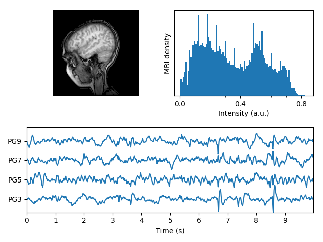

Version 2.2.3
Note
Click here to download the full example code
Displays a set of subplots with an MRI image, its intensity histogram and some EEG traces.
from __future__ import division, print_function
import numpy as np
import matplotlib.pyplot as plt
import matplotlib.cbook as cbook
import matplotlib.cm as cm
from matplotlib.collections import LineCollection
from matplotlib.ticker import MultipleLocator
fig = plt.figure("MRI_with_EEG")
# Load the MRI data (256x256 16 bit integers)
with cbook.get_sample_data('s1045.ima.gz') as dfile:
im = np.fromstring(dfile.read(), np.uint16).reshape((256, 256))
# Plot the MRI image
ax0 = fig.add_subplot(2, 2, 1)
ax0.imshow(im, cmap=cm.gray)
ax0.axis('off')
# Plot the histogram of MRI intensity
ax1 = fig.add_subplot(2, 2, 2)
im = np.ravel(im)
im = im[np.nonzero(im)] # Ignore the background
im = im / (2**16 - 1) # Normalize
ax1.hist(im, bins=100)
ax1.xaxis.set_major_locator(MultipleLocator(0.4))
ax1.minorticks_on()
ax1.set_yticks([])
ax1.set_xlabel('Intensity (a.u.)')
ax1.set_ylabel('MRI density')
# Load the EEG data
numSamples, numRows = 800, 4
with cbook.get_sample_data('eeg.dat') as eegfile:
data = np.fromfile(eegfile, dtype=float)
data.shape = (numSamples, numRows)
t = 10.0 * np.arange(numSamples) / numSamples
# Plot the EEG
ticklocs = []
ax2 = fig.add_subplot(2, 1, 2)
ax2.set_xlim(0, 10)
ax2.set_xticks(np.arange(10))
dmin = data.min()
dmax = data.max()
dr = (dmax - dmin) * 0.7 # Crowd them a bit.
y0 = dmin
y1 = (numRows - 1) * dr + dmax
ax2.set_ylim(y0, y1)
segs = []
for i in range(numRows):
segs.append(np.hstack((t[:, np.newaxis], data[:, i, np.newaxis])))
ticklocs.append(i * dr)
offsets = np.zeros((numRows, 2), dtype=float)
offsets[:, 1] = ticklocs
lines = LineCollection(segs, offsets=offsets, transOffset=None)
ax2.add_collection(lines)
# Set the yticks to use axes coordinates on the y axis
ax2.set_yticks(ticklocs)
ax2.set_yticklabels(['PG3', 'PG5', 'PG7', 'PG9'])
ax2.set_xlabel('Time (s)')
plt.tight_layout()
plt.show()
Keywords: matplotlib code example, codex, python plot, pyplot Gallery generated by Sphinx-Gallery